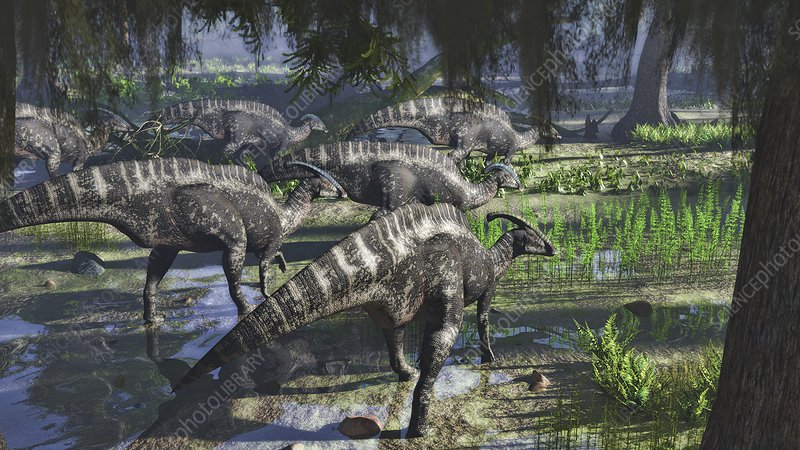

prehistoric info
Name:Adrian.bush age:14(at time of writing) Gender:male
i am a very big introvert, like self isolation mode introvert, i am a massive star wars fan and also a dinosaur fan(obviously) i have a dog which is my child hes a pit, i want a snake like really bad,i love rain, my birthday april 22 so i am a taurus, and my favorite dinosaur is the parasaurolophus but a few sauropods are a close second.
Why i created the website: i created website because i have always been a majior dino fan and also because i see that alot of people dont know about our planets history and the creatures and plants that came before us so i wish to change that
